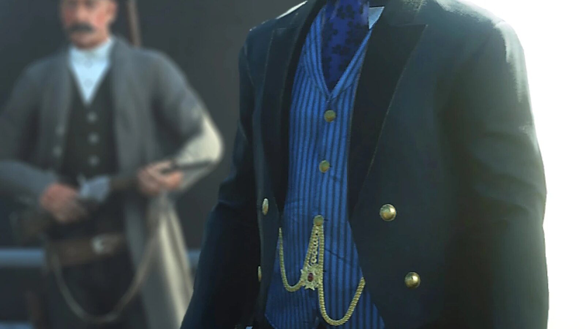

Character · Red Dead Redemption 2
Leviticus Cornwall
Leviticus Cornwall is an American industrialist in Red Dead Redemption 2 (2018), set in 1899. He owns the Southern & Eastern Railway and the Cornwall Kerosene & Tar refinery, and imports sugar from the island of Guarma. In chapter 1 the Van der Linde gang robs his private train, using plans taken from the O'Driscolls. In chapter 2 his men take John Marston and Leopold Strauss hostage in Valentine to draw out Dutch van der Linde. He pays the Pinkerton agents who hunt the gang, among them Andrew Milton and Edgar Ross. In chapter 6 Dutch confronts him on the dock at Annesburg and shoots him dead.
He is played by John Rue.
- Name
- Leviticus Cornwall
- Nicknames
- Horse's Ass (Henri Lemieux) and Gilded Ape (Arthur Morgan), according to the Red Dead Wiki
- Born
- Not given in the game
- Died
- 1899, shot by Dutch van der Linde in Annesburg in "Just a Social Call"
- Status
- Deceased
- Nationality
- American
- Occupation
- Industrialist: railroads, oil, freight and sugar
- Companies
- Cornwall Kerosene & Tar, Southern & Eastern Railway, Cornwall City Railway, Cornwall Freight & Commodities; a stake in the Annesburg coal mine
- Allies
- The Pinkerton Agency, which he pays to hunt the gang; Alberto Fussar, his sugar partner
- Enemy
- The Van der Linde gang
- Games
- Red Dead Redemption 2 (mentioned in Red Dead Online)
- Played by
- John Rue
Biography
Origins
The game gives no date or place of birth for Leviticus Cornwall, and no age. By 1899 he controls railroad, freight, oil and sugar companies, described below under Business empire. The Red Dead Wiki adds that Cornwall offered Colonel Henry Favours, an officer of the United States Army stationed at Fort Wallace, a deal to drive the Wapiti off their reservation, whose land is believed to hold oil. According to the wiki, Favours accepted and began pressuring the tribe, confiscating its horses and withholding vaccines. The same wiki says that Cornwall struck an agreement with the state, presented as a plan to modernize the land, and received a large quantity of state bonds in return.
Red Dead Redemption 2 (1899)
Chapter 1: Colter
Cornwall's name first comes up in "Old Friends". After the Van der Linde gang wipes out the O'Driscoll camp at Ewing Basin, Micah Bell finds a plan on one of the bodies. Dutch van der Linde reads it and sees that it concerns a train the O'Driscolls meant to rob, belonging to a Mr. Leviticus Cornwall. In "Who the Hell is Leviticus Cornwall?", Dutch decides to rob it himself. Hosea Matthews objects that the weather is breaking, that the plan was to lie low and head back west, and he warns Dutch about Cornwall (see Personality). Dutch answers that the gang needs money and that Cornwall seems to have plenty of it. According to the O'Driscolls' information, the train comes north from Big Valley, and the gang is to stop it once it crosses into the Grizzlies. Dutch tells Arthur Morgan and Micah that Cornwall's private car, at the back, is what they are after.
Bill Williamson's charge on the tracks fails to go off, and Arthur, Lenny Summers and Javier Escuella jump onto the train from a tunnel; Javier falls. Arthur and Lenny stop the train and fight the guards until the rest of the gang arrives. A group of employees locks itself in the last car and refuses to come out, and the gang blows the door open with dynamite. Cornwall himself is not on board: he appears only in the portraits hanging in his car, which Lenny compares to a palace. Micah opens the safe and finds railroad contracts and invoices. Lenny reads papers about large sugar imports from the Spanish West Indies and a new boat Cornwall has ordered from Europe. Arthur finds the railroad bonds elsewhere in the car, and Dutch identifies them as bearer bonds.
Two letters addressed to Cornwall can also be picked up in the car (see Business empire). The newspaper article "Train Robbed" reports that masked outlaws robbed a private train belonging to Cornwall in broad daylight, to steal railroad bonds from his personal car. It adds that the train was then sent off without a driver or crew and was finally stopped by engineers and lawmen north of Annesburg. Back at Colter, in "Eastward Bound", Hosea reminds Dutch that they have just robbed a Leviticus Cornwall train, and the gang leaves the mountains for Horseshoe Overlook.
Chapter 2: Horseshoe Overlook
The bonds prove hard to sell. On the ride into Valentine in "Exit, Pursued by a Bruised Ego", Hosea tells Arthur that the Cornwall bonds are still very hot and that he is following a couple of leads. The game never shows Cornwall hiring the Pinkertons: the Red Dead Wiki's page on the train mission only says that the robbery, off screen, contributes to Agents Andrew Milton and Edgar Ross being assigned to track down the gang. In "A Fisher of Men", Milton tells Arthur that a man matching Dutch's description robbed a train belonging to Leviticus Cornwall near Granite Pass. In "Pouring Forth Oil II", Arthur steals an oil wagon from the Cornwall Kerosene & Tar refinery for a later train robbery.
Cornwall appears in person for the first time in "The Sheep and the Goats". Arthur and John Marston sell a stolen flock at the Valentine auction yard and join Dutch at Keane's Saloon, where he is arguing with Leopold Strauss. Dutch sends John and Strauss to collect the payment. Cornwall then arrives in front of the saloon with an escort of private guards, has the two men held at gunpoint as hostages and calls on Dutch to come out before they are killed. He leaves before Dutch and Arthur step outside, letting his men deal with them. Dutch talks to keep the guards busy while Arthur draws and frees the hostages. In the gunfight that follows across the town, Strauss is shot in the leg, and the gang escapes.
The article "A Horror Show" describes the shooting in Valentine, saying that a few agents known to work for Leviticus Cornwall took part in it alongside the lawmen and the Van der Linde gang. Dutch decides that the gang must move. According to the Red Dead Wiki, the departure from Horseshoe Overlook for Clemens Point follows both the Valentine ambush and Milton's visit to Arthur at the river.
Chapter 3: Clemens Point
At Clemens Point, Cornwall is still on the gang's mind. In "The New South", during a fishing trip, Hosea asks Arthur and Dutch about the Valentine business. Arthur and Dutch describe the ambush at the saloon, and Hosea concludes that the Pinkertons cannot be far behind Cornwall (their lines are quoted under Personality and Business empire). In "Blessed are the Peacemakers", on the ride to the parley with Colm O'Driscoll, Micah lists the enemies the gang cannot afford to fight all at once, among them "And Leviticus Cornwall and his private army!"
The gang robs Cornwall a second time without meaning to. In "An Honest Mistake", Uncle brings Arthur a tip about a supply wagon he believes unguarded. Arthur, Uncle, Charles Smith and Bill stop it at a crossroads south of Scarlett Meadows, but the driver turns out to work for Cornwall Kerosene & Tar. Cornwall's guards close in, and the four flee into the woods and hide in a barn at Compson's Stead. The guards find them that night; the barn catches fire during the fight, and the four escape. The article "Coach Ambushed" reports the robbery of a supply coach belonging to Cornwall Industries south of Scarlett Meadows by four thieves, who then burned down a barn during a night gunfight.
Arthur draws the conclusion before the Valentine bank job. In "Sodom? Back to Gomorrah", in an optional conversation on the ride, he sums up the gang's record with Cornwall: his train robbed, a heap of his men shot in Valentine, his stagecoach robbed, and now a return to the one place where Cornwall knew to find them. Bill brushes it off: "Forget about Cornwall... he can't have many men left at this point." Around the same time, the newspapers announce the steamship Cornwall has ordered from the United Kingdom (see Business empire).
Chapter 4: Saint Denis
In "The Gilded Cage", Dutch, Arthur, Hosea and Bill attend the party of Mayor Henri Lemieux in Saint Denis. The mayor's butler, Pierre, informs Lemieux of a telephone call from Leviticus Cornwall. Dutch overhears and sends Arthur after the butler. Arthur follows him to the mayor's office, unlocks the desk drawer once Pierre has gone and takes documents the mayor was supposed to sign; the mission objective calls the item a ledger. According to the Red Dead Wiki, these are papers Cornwall wanted Lemieux to sign, and the mayor puts the matter off until after the fireworks. In the same chapter, a newspaper reports Cornwall's sugar deal with Guarma (see Business empire).
Cornwall's plans for the Wapiti land also reach Arthur in this chapter. In "American Fathers I", the Wapiti chief Rains Fall, his son Eagle Flies and the writer Evelyn Miller tell him that they believe Cornwall's acquisition of the reservation may be illegal, and that documents kept at Cornwall Kerosene & Tar could prove it. In part II, Arthur gets into the refinery, forces the foreman Danbury to hand over the papers and escapes with the help of Eagle Flies.
Chapter 6: Beaver Hollow
After the return from Guarma, Dutch decides to confront Cornwall in person. In "Just a Social Call", he and Micah meet Arthur in Annesburg. When Arthur asks whether this is revenge, Dutch calls it a simple social call. The three men take cover in the harbor as Cornwall's yacht comes in. Cornwall comes ashore with Agents Milton and Ross, complains that they have achieved nothing and says he may stop paying the agency. According to the Red Dead Wiki's character page, he complains that Dutch is still out there laughing at him, and when Milton replies that the agency is doing all it can within the law, Cornwall tells him to forget the law and bring him Dutch. The two agents leave. Cornwall sends his secretary, Janson, to send a telegram to New York, and Dutch has Micah follow him.
Cornwall then turns on Didsbury, a miner and union representative, who has come to speak for the miners striking over their wages. Dutch steps out of cover and tells Cornwall that he is a worse man than Dutch himself. He offers to spare his life in exchange for 10,000 dollars, Cornwall's boat and safe passage out of town. Cornwall laughs at the offer and turns it down. Dutch answers with a single shot to the chest, which kills him. According to the Red Dead Wiki, the body falls into the water; it can never be found or searched. Cornwall's guards and the Pinkertons open fire, and Dutch and Arthur fight their way through the town and the Jameson mine buildings. They find Micah knocking Janson out, and the three escape into the forest on stolen horses.
The papers Micah takes from Janson show that Cornwall's company has a contract with the Army and is moving dynamite from Annesburg to Saint Denis; according to the Red Dead Wiki, they also point to bonds kept at the oil refinery. Dutch sends Arthur, Micah and Bill after the dynamite, which leads to the wagon robbery of "The Delights of Van Horn". The article "Cornwall Murdered" reports that the prominent industrialist was killed by assassins on arriving by boat for a business meeting in Annesburg. It says that members of Congress called for a special inquiry and that the killers remain unidentified. It adds that his businesses fed thousands of families across the country, and that investigators found no evidence of a motive. According to the Red Dead Wiki, many townsfolk mention his death in passing, and the post office clerk at Van Horn may ask Arthur whether he has heard about the murder.
Cornwall's company remains a target after his death. In "My Last Boy", Eagle Flies leads Wapiti warriors against the Army at the Cornwall Kerosene & Tar refinery in the Heartland Oil Fields, and the gang rides with them. Inside the warehouse office, Dutch finds the state bonds he came for. Colonel Favours shoots Eagle Flies, and Arthur kills Favours. After this mission, the refinery and the oil fields can be explored without guards, their interiors closed and boarded up.
Epilogue (1907)
Epilogue 1: Pronghorn Ranch
Two newspaper articles of the epilogue look back on Cornwall's businesses. "Pump Jacks Sit Silent", headlined "No oil found at Wapiti" and "Investors allege fraud", reports that the oil reserves found near the Wapiti Indian Reservation in 1899 have turned up dry: well after well yielded only a "miniscule" amount of oil, and all drilling has stopped. It recalls that hopes rested on a detailed explanation given by the Leland Oil Development Company on behalf of Cornwall Kerosene & Tar. The tribe fled after a bloody battle at the company's factory; many were gunned down in Wyoming, a few are believed to have reached Canada, and no Indians are left in the area. "Railroad Takeover Complete" announces that the Senate has passed a bill consolidating the remaining lines of the Cornwall Southern & Eastern Railways into the Pacific Union Railroad, which plans to lay track between West Elizabeth and New Austin.
The Red Dead Wiki notes other traces of the change of owners in 1907. The Saint Denis trolleys are now run by the Pacific Union, and the Cornwall freight yard has become the J.D. McKnight & Co. Freightyard. During the ending credits, a shot shows the Cornwall Kerosene & Tar refinery long abandoned.
Personality
Rockstar's character descriptions of September 2018 cover the Van der Linde gang and do not include Cornwall. The article "Cornwall Expansion Continues" calls him a well-known expansionist and one of the wealthiest men in the region. It reports that he has been known to "speak glibly about the evil effects of education upon certain kinds of lesser intellects".
Before the train robbery, Hosea warns Dutch: "Leviticus Cornwall's no joke, Dutch, he's..." After the ambush in Valentine, Dutch sums him up on the fishing trip of "The New South": "It is safe to say Mr. Cornwall isn't a man to let bygones be bygones." Arthur adds that Cornwall "came with a lot of guards and what seemed like just about every lawman in the county". On the Annesburg dock, Dutch sets himself against him: "You kill, I kill. You rob, I rob... only difference I can see is I choose whom I kill and rob and you destroy everything in your path."
In his own words
No transcript of his scenes is published on the Red Dead Wiki; the lines below come from the wiki's quote list. He introduces himself with: "My name is Leviticus Cornwall. I am not a man to be messed with by the likes of you." To Dutch he complains: "You don't know me but you keep robbing me!" In Valentine, with John and Strauss held by his men, he calls out: "Get out here, before I have these men killed!" In Annesburg he dismisses Agent Milton's appeal to the law: "I think we both know what you can do with your laws! Find me Dutch van der Linde! Bring him here, and leave the laws to them as need them! Good day, sir."
On the same dock he answers Didsbury, the representative of the striking miners: "Folk, feel?! Business doesn't give two figs about feelings, sir! Not two figs. It's a nonsense that will bring a plague on both of our houses." Faced with Dutch, he rejects one of his accusations: "You show a criminal's grasp of sophistry sir, I did no such thing." His last words, refusing Dutch's terms, are: "I'll do no such thing."
Names
Leviticus is the name of the third book of the Old Testament. Dutch calls him "Mr. Cornwall", and the gang mostly says Cornwall. The Red Dead Wiki lists two insults as nicknames, without saying where they are spoken: "Horse's Ass", attributed to the mayor of Saint Denis, Henri Lemieux, and "Gilded Ape", attributed to Arthur Morgan. According to the same wiki, Arthur borrows the name Leviticus Cornwall as an alias on Guarma.
Appearance
Cornwall has gray hair, receding at the temples, and a full gray beard. He wears a three-piece suit in each of his scenes. On the vest, two watch chains meet at a star-shaped fob set with rubies.
Relationships

Dutch van der Linde
Dutch robs Cornwall's train in chapter 1 with plans taken from the O'Driscolls, and Cornwall's men come for him in Valentine in chapter 2. In chapter 6 Dutch confronts him on the Annesburg dock, asks for money, his boat and safe passage, and shoots him when he refuses (see Biography). Dutch's own comparison between the two men is quoted under Personality.

Arthur Morgan
Arthur takes part in the train robbery, the Valentine ambush, "An Honest Mistake" and the ride of "Sodom? Back to Gomorrah" (see Biography). In camp at Clemens Point, according to the Red Dead Wiki's list of camp events, when Lenny asks whether they are running from the Pinkertons or from Cornwall, Arthur answers that Cornwall is the one paying the Pinkertons. He is with Dutch on the dock in Annesburg (see Biography).

Hosea Matthews
Hosea is against robbing Cornwall's train and warns Dutch about him (see Personality and Business empire). He then has to find a buyer for the Cornwall bonds (see Biography).

Andrew Milton
Milton leads the Pinkertons that Cornwall pays to hunt the gang. He questions Arthur about the train robbery in "A Fisher of Men". In Annesburg he comes ashore from Cornwall's yacht and hears Cornwall's complaints (see Biography and In his own words).

Edgar Ross
Ross is Milton's partner in 1899 and comes off Cornwall's yacht with him in Annesburg, shortly before Dutch kills Cornwall (see Biography).
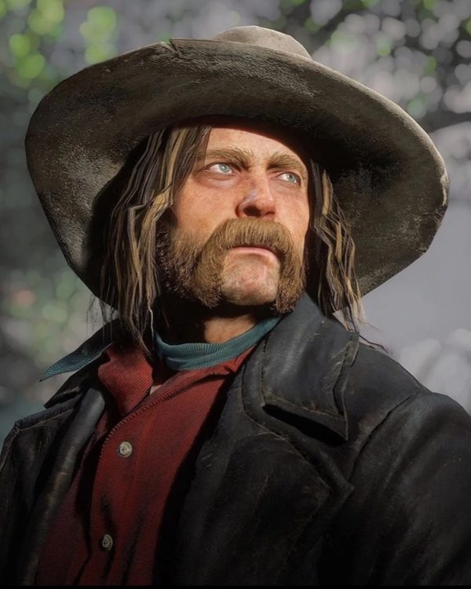
Micah Bell
Micah finds the plans for Cornwall's train on a dead O'Driscoll and searches the private car with Arthur and Lenny. He names Cornwall among the gang's enemies before the parley with Colm, and in Annesburg he takes the papers of Cornwall's secretary (see Biography).

John Marston
John is held at gunpoint by Cornwall's men outside the saloon in Valentine in "The Sheep and the Goats", with Strauss, until Arthur frees them (see Biography).

Leopold Strauss
Strauss is the other hostage in Valentine (see Biography). Hosea later jokes that the Cornwall business scared the living daylights out of him. At Clemens Point, Bill says he heard Strauss soiled himself that day, and Strauss corrects him: he was shot in the leg.
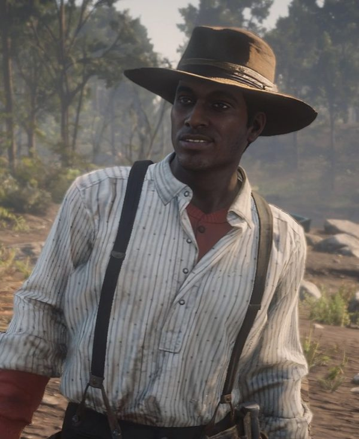
Lenny Summers
Lenny boards Cornwall's moving train with Arthur and reads the papers found in his safe (see Biography). In camp he asks Arthur who they are really running from (see Arthur Morgan).

Bill Williamson
Bill's charge on the tracks fails to stop Cornwall's train, and he later hands over the dynamite that opens the private car. In "An Honest Mistake", Cornwall's guards chase him into a barn with Arthur, Charles and Uncle. On the ride of "Sodom? Back to Gomorrah", he dismisses Arthur's worries about Cornwall (see Biography).

Charles Smith
Charles keeps watch for outriders during the train robbery, then blows open Cornwall's private car with Arthur. He is part of "An Honest Mistake", and in chapter 6 he fights at the Cornwall Kerosene & Tar refinery alongside the Wapiti (see Biography).

Uncle
Uncle brings the tip about a supposedly unguarded wagon in "An Honest Mistake", which turns out to belong to Cornwall Kerosene & Tar (see Biography).

Colm O'Driscoll
The O'Driscolls were planning to rob Cornwall's train before the Van der Linde gang took their plans at Ewing Basin. At the parley in "Blessed are the Peacemakers", Colm asks Dutch: "How's that score you stole off us?"
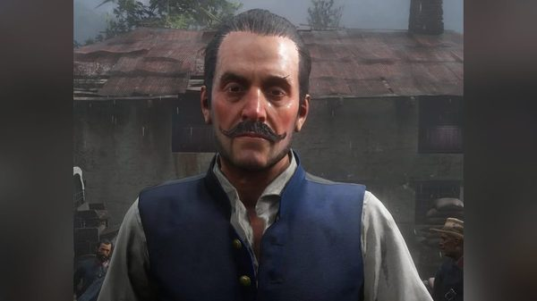
Alberto Fussar
The governor of Guarma is Cornwall's sugar partner (see Business empire). He is pointed out to Dutch and Arthur at the mayor's party in Saint Denis.
Henry Favours
The Army colonel is the man Cornwall, according to the Red Dead Wiki, recruited to drive the Wapiti off their land (see Biography). Favours commands the soldiers defending the Cornwall Kerosene & Tar refinery in chapter 6 (see Biography).
Eagle Flies
With his father, the Wapiti chief Rains Fall, and Evelyn Miller, Eagle Flies asks Arthur in "American Fathers I" to look for documents at the Cornwall refinery. In part II he helps Arthur escape from it, and he later leads the attack on the refinery in "My Last Boy" (see Biography).
Henri Lemieux
The mayor of Saint Denis receives a telephone call from Cornwall during his party in "The Gilded Cage", about papers Cornwall wants signed; Arthur steals them (see Biography). According to the Red Dead Wiki, Lemieux is the one who calls Cornwall "Horse's Ass" (see Names).
Janson
Cornwall's secretary arrives with him in Annesburg. According to the Red Dead Wiki, Cornwall sends him to wire a man named Goldberg in New York about interest rates. Micah takes his papers during the shootout (see Biography).
Didsbury
This Annesburg miner speaks to Cornwall for the men striking over their pay until Dutch steps out of cover (see In his own words). He takes cover in the ship during the shootout, according to the Red Dead Wiki.
Archibald Jameson
The Red Dead Wiki presents him as the founder and owner of the Jameson Mining and Coal Company. He writes to Cornwall about the Annesburg mine (see Business empire).
Business empire
Arthur's question before the train robbery, "Who is Leviticus Cornwall?", gives the chapter 1 mission its title. Hosea answers: "He's a big railway magnate, sugar dealer, oil man." Dutch replies: "Well how good for him. Sounds like he has more than enough to share." The newspaper article "Cornwall Expansion Continues" (Blackwater Ledger No. 63, New Hanover Gazette No. 28, Saint Denis Times No. 44) quotes the slogan he used to launch his railroad: "A railroad into every expanse of this country is only a matter of time." It explains that he builds the trains and uses them to carry the goods of Cornwall Freight & Commodities, Cornwall Kerosene & Tar and his other concerns. It adds that many people call his group a regional monopoly, and that Congress has so far shown little interest in breaking it up.
Railroads and freight
His main line is the Southern & Eastern Railway, also called Cornwall Southern & Eastern Railways, whose trains run through Ambarino, New Hanover, Lemoyne and West Elizabeth according to the Red Dead Wiki. One of them carries his private car, robbed by the gang in chapter 1; an employee inside tells Dutch: "I work for Leviticus Cornwall." The emblem painted on his trains bears the Latin motto "Pecuniae Obediunt Omnia", which the Red Dead Wiki translates as "Money answers all things". In Saint Denis he owns the Cornwall City Railway, which runs the city's trolleys and which the wiki dates to 1893, and the Cornwall Co. Freight Yard. The gang steals one of those trolleys in "Urban Pleasures".
Oil
Cornwall Kerosene & Tar runs a refinery in the Heartlands of New Hanover, next to the Heartland Oil Fields, guarded by armed men who turn hostile if a visitor lingers. The Red Dead Wiki lists Cornwall as founder and president, Cameron Spence as vice president and Danbury as foreman. A letter found in the robbed train, signed by James Critchly of the Leland Oil Development Company, asks Cornwall for 2,000 dollars still owed for a first phase of exploration on the Wapiti Indian Reservation, under a contract dated November 9, 1898. A second letter, signed by Spence, is found on a burned body at an abandoned oil derrick in the Heartlands. It tells a Mr. Varley that Cornwall grants him three more weeks to reconsider the company's purchase offers. It then warns that a company his size may struggle to compete on price and to get acceptable railroad rates.
Sugar, coal and a steamship
His sugar comes from the Caribbean: "Cornwall Expansion Continues" says that hardly a week passes without a ship bringing Cornwall Sugar into America. The article "Guarma Island Sugar Boom" (Blackwater Ledger No. 67, New Hanover Gazette No. 32, Saint Denis Times No. 48), published in chapter 4, shows him beside a ship unloading sugar from Guarma. It reports that he made two trips to the region to tour sugar plantations and signed an exclusive purchase order with the island's governor, Alberto Fussar, whom he called "a great friend of America". The same article says the boom is undercutting the American sugar industry and costing American jobs, and that Fussar's detractors call him a controversial figure. In coal, a letter from Archibald Jameson found in the robbed train thanks Cornwall for a telegram and for his interest in the Jameson Mining and Coal Company. Jameson calls false the reports of mismanagement and financial trouble at the Annesburg mine, and offers a business meeting and a personal tour of the mine. After Cornwall's death, the article "Cornwall Murdered" states that he had recently bought a stake in the local coal mine, previously operated by the Jameson Mining Company.
The article "A Modern Steam Marvel" (Blackwater Ledger No. 65, New Hanover Gazette No. 30, Saint Denis Times No. 46) appears in chapter 3 under the headline "Cornwall orders fastest steamship in the world". It says that Cornwall has ordered the nation's first turbine-powered steamship from the United Kingdom, and that it is expected to arrive within the week. It describes a private vessel of the Turbinia class, built to his own specifications and more luxurious than any ship before it. In "Just a Social Call", he arrives in Annesburg aboard a steamboat named Malvina, according to the Red Dead Wiki, which compares its name and lines to Turbinia, the first turbine-powered steamship, built in 1894 by Charles Parsons.
Guards and Pinkertons
"Cornwall Expansion Continues" says he requires numerous private guards to protect his person and his businesses; in the game they guard his trains, wagons and refinery. The same article says he is believed to be one of the Pinkerton Agency's main clients in the region, and that he has asked the government to protect industries after a string of robberies. Hosea links the two threats on the fishing trip of "The New South": "And if Cornwall found us, the Pinkertons couldn't have been far behind." The Red Dead Wiki gives him a buckskin American Standardbred as his horse and no weapon.
Missions
The Red Dead Wiki lists three missions of Red Dead Redemption 2 for Cornwall; he appears in person in two of them, and only in portraits in the chapter 1 train robbery. The French edition adds "The Gilded Cage", in which he is heard of only through a telephone call. Many other missions mention him, or set the gang against his companies, guards and agents; they are listed in the second table.
Appearances
| Mission | Chapter | Cornwall's role |
|---|---|---|
| Who the Hell is Leviticus Cornwall? | 1. Colter | The gang robs his private train and takes his railroad bonds. He is seen only in the portraits hanging in his car. |
| The Sheep and the Goats | 2. Horseshoe Overlook | His guards take John and Strauss hostage outside Keane's Saloon in Valentine; he calls for Dutch, then leaves before the shooting. |
| Just a Social Call | 6. Beaver Hollow | Scolds Agents Milton and Ross on the Annesburg docks, refuses Dutch's terms and is shot dead by him. |
Missions in which he is mentioned or his businesses are involved
| Mission | Chapter | Link with Cornwall |
|---|---|---|
| Old Friends | 1. Colter | Dutch reads the O'Driscolls' plan for a train belonging to Cornwall, found on a body by Micah. |
| Eastward Bound | 1. Colter | Hosea reminds Dutch that the gang has just robbed a Cornwall train. |
| Exit, Pursued by a Bruised Ego | 2. Horseshoe Overlook | Hosea tells Arthur that the Cornwall bonds are still very hot and that he has a couple of leads. |
| A Fisher of Men | 2. Horseshoe Overlook | Milton tells Arthur that a man matching Dutch's description robbed Cornwall's train near Granite Pass. |
| Pouring Forth Oil II | 2. Horseshoe Overlook | Arthur steals an oil wagon from the Cornwall Kerosene & Tar refinery. |
| The New South | 3. Clemens Point | Hosea, Arthur and Dutch talk over the Valentine ambush and the Pinkertons. |
| Blessed are the Peacemakers | 3. Clemens Point | Micah names Cornwall among the enemies the gang cannot fight all at once. |
| An Honest Mistake | 3. Clemens Point | The wagon Uncle wanted to rob belongs to Cornwall Kerosene & Tar; Cornwall's guards chase the four robbers to a barn. |
| Sodom? Back to Gomorrah | 3. Clemens Point | On the ride to Valentine, Arthur and Bill can discuss the danger Cornwall still poses. |
| The Gilded Cage | 4. Saint Denis | Cornwall telephones Mayor Lemieux during the party; Arthur steals the documents the mayor was to sign. |
| American Fathers I and II | 4. Saint Denis | Arthur steals papers from the Cornwall Kerosene & Tar refinery for Rains Fall and Eagle Flies. |
| Savagery Unleashed | 5. Guarma | According to the Red Dead Wiki, Arthur gives Cornwall's name as his own when Angel questions him. |
| The Delights of Van Horn | 6. Beaver Hollow | Arthur and Bill steal the Annesburg dynamite revealed by the papers taken from Cornwall's secretary. |
| My Last Boy | 6. Beaver Hollow | The Wapiti and the gang attack the Army at the Cornwall Kerosene & Tar refinery; Dutch takes the state bonds kept there. |
Quotes
The lines below, spoken about Cornwall by other characters, are given in the original English and checked against the Red Dead Wiki's transcripts of the missions named. Cornwall's own lines, and the lines about him quoted elsewhere on this page, are under Personality, Business empire and Biography.
Damn, he's got an army! Who is this guy?
Lenny, fighting Cornwall's train guards, Who the Hell is Leviticus Cornwall? (RDR2, chapter 1)We don't want to kill you... we just wanna rob your boss.
Dutch, to the employees forced out of Cornwall's car, Who the Hell is Leviticus Cornwall? (RDR2, chapter 1)That so? Because I heard... a guy fitting his description robbed a train... belonging to Leviticus Cornwall up near Granite Pass.
Agent Milton to Arthur, A Fisher of Men (RDR2, chapter 2)
Development and performance
Casting
Leviticus Cornwall appears only in Red Dead Redemption 2 (2018). He is played by John Rue, who is credited in the role by the Red Dead Wiki and by Wikipedia's list of the game's characters. The wiki describes Rue as an American actor and lists The Departed, Bridge of Spies and The Post among his screen credits. The Red Dead Wiki lists Cornwall as his only role in the series, and no interview in which Rue discusses the role has been found.
Cut content
The game files keep a few traces of unused material around Cornwall, according to the Red Dead Wiki's page on cut content. A cut Guarma character named Señor Andreas Colon, who would have given missions to the player, shares face textures close to Cornwall's. A cut mission labeled "ind2" would have had Arthur plant dynamite under the Cornwall Freight and Commodities building in Saint Denis. The same page also shows concept art for "Who the Hell is Leviticus Cornwall?" and lists an unused vest and hairstyle for the conductor of Cornwall's train.
Reception
A robber baron on screen
IGN's Jared Petty discussed Cornwall in an article on the game's historical accuracy published on 24 December 2018. He wrote that business interests of the era made heavy use of private agents and hired guns, "just as Leviticus Cornwall does in the pursuit of Dutch's gang". He called Cornwall "a parodic caricature of the captains of industry" of the period, naming J.P. Morgan, Andrew Carnegie and George Vanderbilt. Petty linked their power to industries ranging from oil and coal to Caribbean sugar.
The scholars Hilary Jane Locke and Thomas Ashley Mackay studied the game's depiction of Progressive Era politics in The Journal of the Gilded Age and Progressive Era (Cambridge University Press, vol. 20, January 2021). According to Wikipedia's summary of their article, they read Cornwall as a metaphor for American capitalism and noted his resemblance to robber barons such as J.P. Morgan and John D. Rockefeller. Their notes point out that a strike is mentioned just before Dutch kills him.
Other media and legacy
Red Dead Online
Cornwall does not appear in Red Dead Online, but the Red Dead Wiki lists him as mentioned there. According to the French edition of the wiki, the legendary bounty hunter brings him up in the bounty on Etta Doyle, explaining that Cornwall pays bounty hunters to track her down. The mission itself starts at the Cornwall Co. freight yard in Saint Denis, where two armed guards tell the player that a trap has been set for her gang. His refinery is the target of "Kerosene, Tar, and Greed", a story mission for dishonorable players. Samson Finch sends the posse to rob industrialists meeting there. The players take over a train carrying Pinkertons to reach the refinery. Cornwall executives have shut themselves in an office upstairs. The Blood Money update, released on July 13, 2021, added a three-part mission sequence called "The Cornwall Contract".
Trivia
- Whatever the place where the player actually stops Cornwall's train, the cutscene always shows it halted at Granite Pass, southwest of Window Rock.
- The locomotive of Cornwall's private train, in Southern and Eastern Railway colors, is a model with a steel doghouse tender that appears in no other mission, according to the Red Dead Wiki.
- The robbery appears twice on the Gang Savings page of Arthur's journal: a first entry with an X, the mark for jobs that brought in nothing, and a second one after Hosea sells the bonds.
- The clerk at the Valentine train station may bring up the robbery of Cornwall's train.
- The article "Train Robbed" runs in Blackwater Ledger No. 62, New Hanover Gazette No. 27 and Saint Denis Times No. 43; "Cornwall Murdered" runs in Blackwater Ledger No. 70, New Hanover Gazette No. 35 and Saint Denis Times No. 51.
- In "The Sheep and the Goats", if the player waits too long to shoot the hostage takers, Dutch loses patience and orders Arthur to fire, John and Strauss are killed and the mission fails.
- One of the gold medal objectives of "Just a Social Call" is to reach the escape horses within 2 minutes and 45 seconds of Cornwall's death.
- Cornwall's cigarette card, "Oil Tycoon", belongs to the Prominent Americans set. According to the Red Dead Wiki's page on the set, it lies on an upturned barrel on the porch of a wooden house southwest of the show tent in Valentine.
Gallery
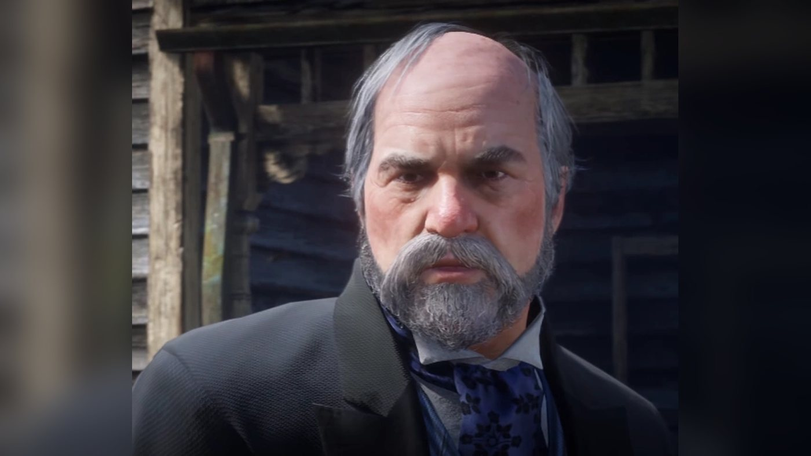
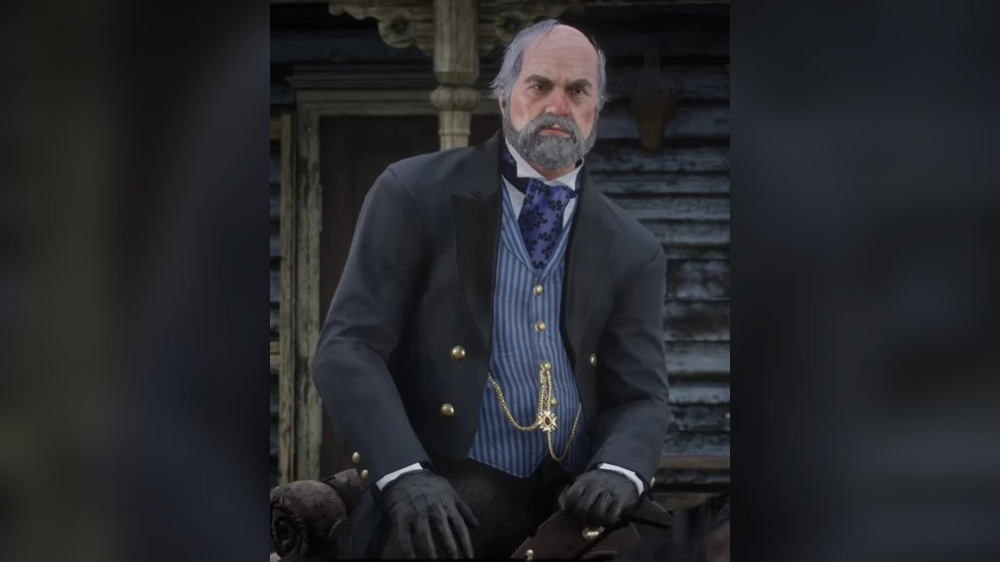
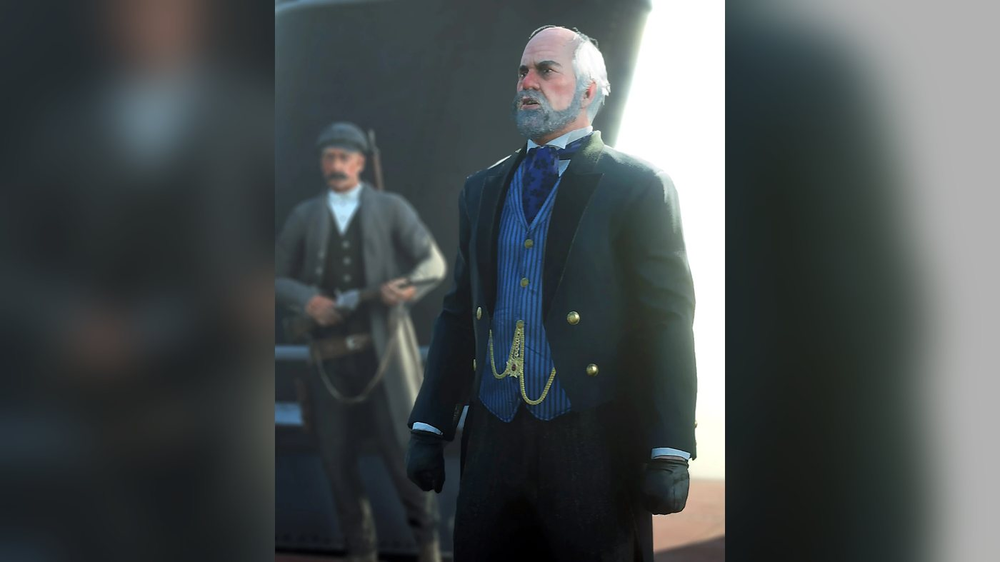
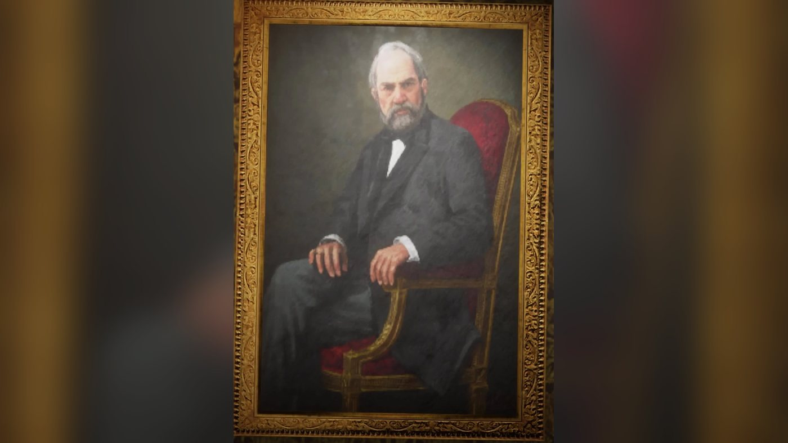
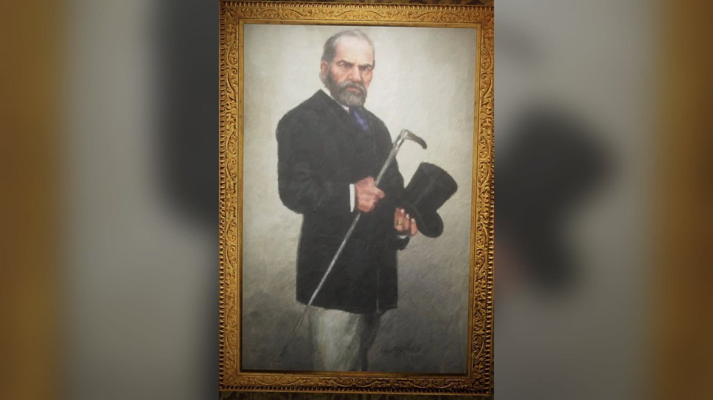
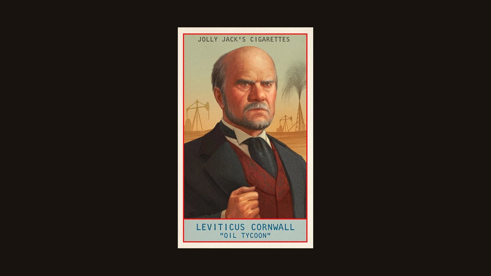
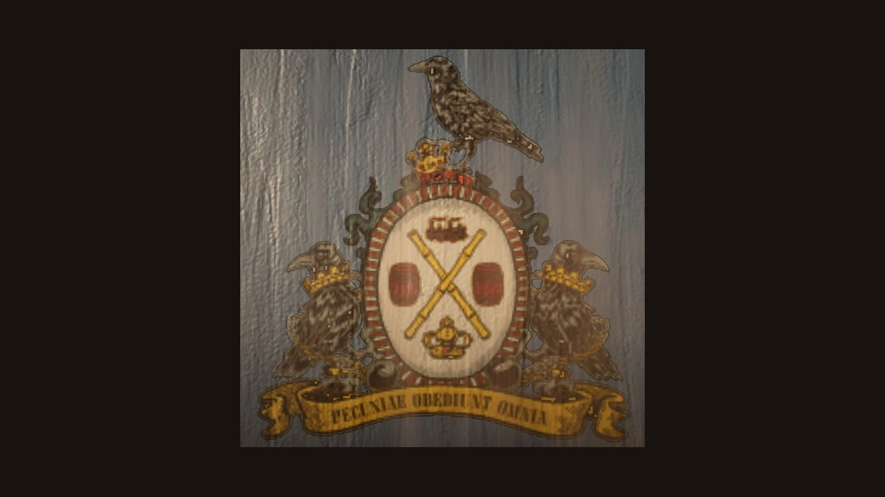